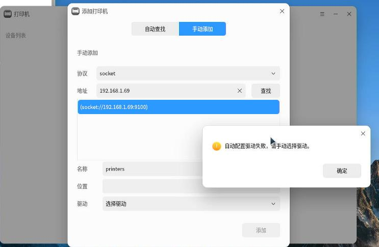
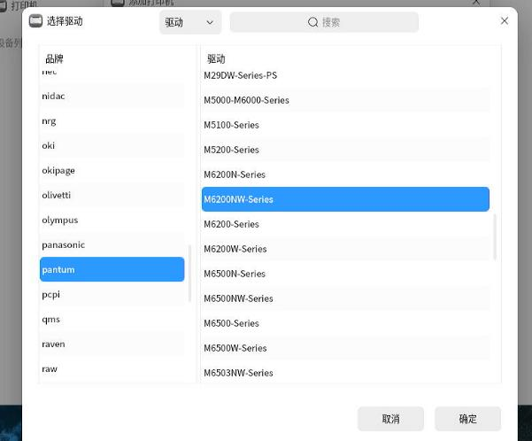
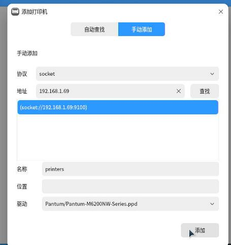
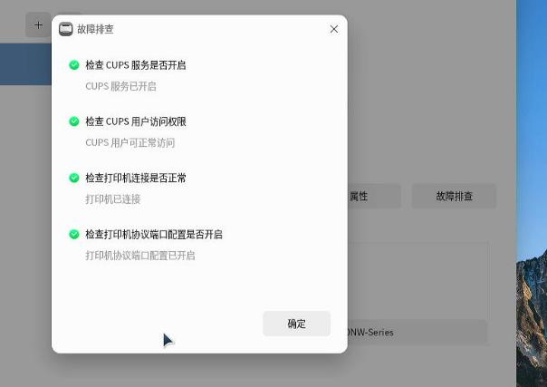
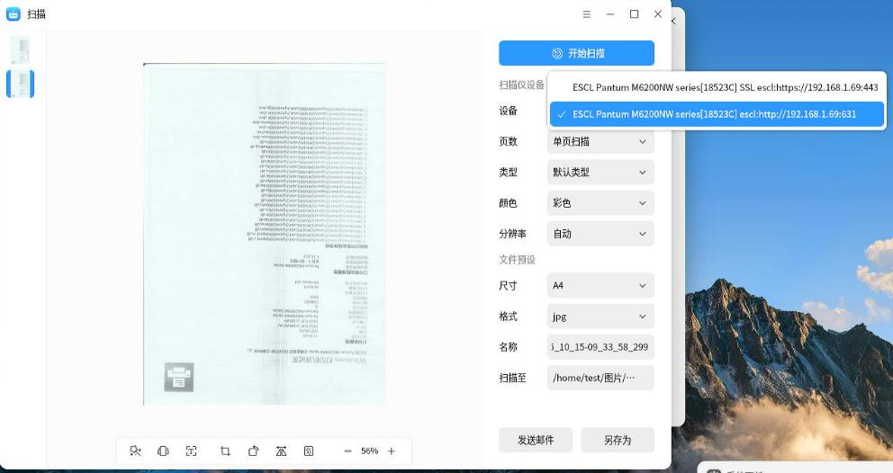
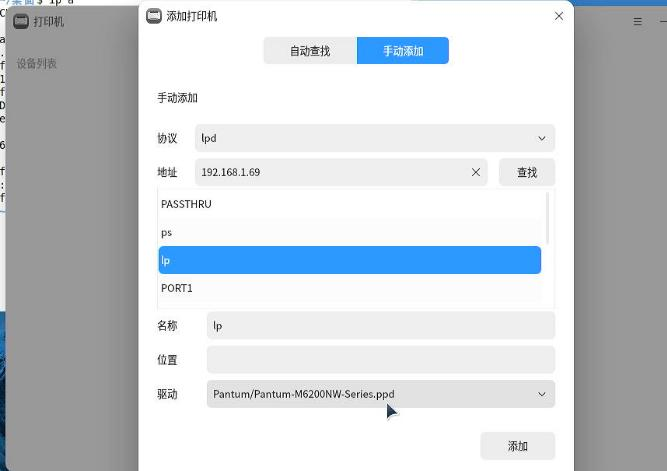
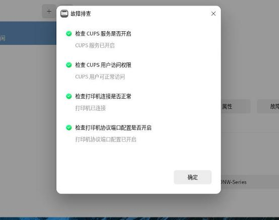
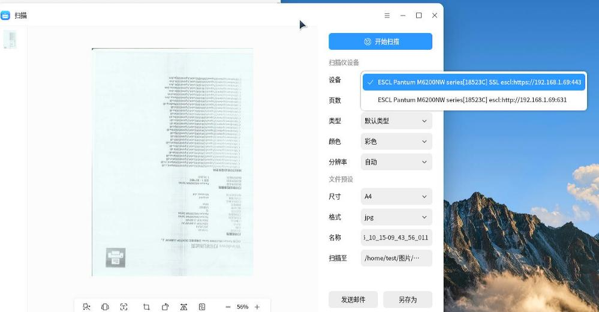
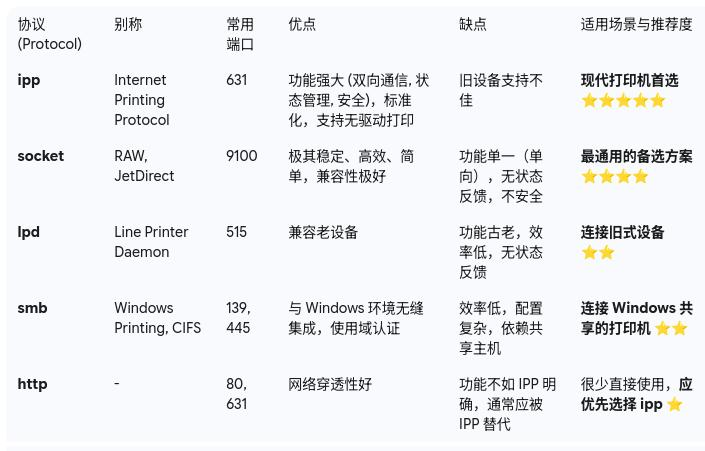

20251015
1. lpp ethernet based
ipp everywhere configured
~$ sudo lpstat -l -p Pantum_M6200NW_series_18523C
打印机 Pantum_M6200NW_series_18523C 目前空闲。从 2025年10月15日 星期三 08时51分41秒 开始启用
已挂载表单：
内容类型：任意
打印机类型：未知
描述：Pantum_M6200NW_series_18523C
警告：none
位置：
连接：直接
界面：/etc/cups/ppd/Pantum_M6200NW_series_18523C.ppd
发生错误时：无警告
发生错误时：继续
允许的用户：
(全部)
已允许表单：
(无)
需要横幅
字符集：
(无)
默认字间距：
默认页面尺寸：
默认端口设置：
test@test-Standard-PC-i440FX-PIIX-1996:~$ sudo dpkg -l | grep -i pantum
$ sudo ls -l -h /etc/cups/ppd/
总计 12K
-rw-r----- 1 root lp 8.4K 10月 15 08:51 Pantum_M6200NW_series_18523C.ppd
2. raw printer config
Difference between raw/lpd:
协议 端口 连接地址/URI 格式 优点
RAW 9100 socket://<IP地址>:9100 非常简单，通用，高效，是目前的主流选择。
LPD 515 lpd://<IP地址>/<队列名> 兼容性好，尤其是在一些旧设备或混合环境中。
Kylin v10:

Select the driver:



Scanning via raw:

3. lpd printer config
Kylin v10:
通常 LPD 还需要一个“队列 (Queue)”名称。对于大多数打印机，队列名可以是 raw、lp、print 或者留空。您可以先尝试 raw。
最终生成的设备 URI 应该是类似这样的格式: lpd://192.168.1.100/raw

Detect printer:

Scanner config, seems the same as the raw config:

4. different kinds of printer

